제선기능사 (2012-02-12 기출문제)
1과목: 금속재료일반
1. 다음 중 두랄루민과 관련이 없는 것은?
- 용체화처리를 한다.
- 상온시효처리를 한다.
- 알루미늄 합금이다.
- 단조경화 합금이다.
(정답률: 68%)

2. 다음 중 반도체제조용으로 사용되는 금속으로 옳은 것은?
- W, Co
- B, Mn
- Fe, P
- Si, Ge
(정답률: 82%)
3. Y합금의 일종으로 Ti 과 Cu를 0.2% 정도씩 첨가한 합금으로 피스톤에 사용되는 합금의 명칭은?
- 라우탈
- 엘린바
- 두랄루민
- 코비탈륨
(정답률: 73%)
4. 용탕을 금속 주형에 주입 후 응고할 때, 주형의 면에서 중심 방향으로 성장하는 나란하고 가느다란 기둥 모양의 결정을 무엇이라고 하는가?
- 단결정
- 다결정
- 주상 결정
- 크리스탈 결정
(정답률: 88%)
5. 주물용 Al-Si 합금 용탕에 0.01% 정도의 금속나트륨을 넣고 주형에 용탕을 주입함으로써 조직을 미세화시키고 공정점을 이동시키는 처리는?
- 용체화처리
- 개량처리
- 접종처리
- 구상화처리
(정답률: 72%)
6. 아공석강의 탄소 함유량(%C)으로 옳은 것은?
- 0.025~0.8%C
- 0.8~2.0%C
- 2.0~4.3%C
- 4.3~6.67%C
(정답률: 77%)
7. 금속 중에 0.01~0.1㎛ 정도의 산화물 등 미세한 입자를 균일하게 분포시킨 금속 복합 재료는 고온에서 재료의 어떤 성질을 향상시킨 것인가?
- 내식성
- 크리프
- 피로강도
- 전기전도도
(정답률: 74%)
8. 공구용 재료로서 구비해야 할 조건이 아닌 것은?
- 강인성이 커야 한다.
- 내마멸성이 작아야 한다.
- 열처리와 공작이 용이해야 한다.
- 상온과 고온에서의 경도가 높아야 한다.
(정답률: 85%)
9. 다음 중 황동 합금에 해당되는 것은?
- 질화강
- 톰백
- 스텔라이트
- 화이트 메탈
(정답률: 80%)
10. 강괴의 종류에 해당되지 않는 것은?
- 쾌삭강
- 캡드강
- 킬드강
- 림드강
(정답률: 83%)
11. 다음의 금속 상태도에서 합금 m을 냉각시킬 때 m2 점에서 결정 A와 용액 E와의 양적 관계를 옳게 나타낸 것은?
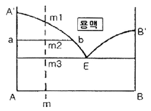
- 결정A : 용액E =
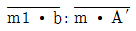
- 결정A : 용액F =

- 결정A : 용액E =

- 결정A : 용액F =

(정답률: 61%)
12. 독성이 없어 의약품, 식품 등의 포장형 튜브 제조에 많이 사용되는 금속으로 탈색효과가 우수하며, 비중이 약 7.3인 금속은?
- 주석(Sn)
- 아연(Zn)
- 망간(Mn)
- 백금(Pt)
(정답률: 77%)
13. 다음 중 Mg 합금에 해당하는 것은?
- 실루민
- 문쯔메탈
- 엘렉트론
- 배빗메탈
(정답률: 59%)
14. 다음 중 슬립(slip)에 대한 설명으로 틀린 것은?
- 원자 밀도가 가장 큰 격자면에서 잘 일어난다.
- 원자 밀도가 최대인 방향으로 잘 일어난다.
- 슬립이 계속 진행하면 결정은 점점 단단해져서 변형이 쉬어진다.
- 다결정에서는 외력이 가해질 때 슬립방향이 서로 달라 간섭을 일으킨다.
(정답률: 82%)
15. 구상흑연 주철품의 기호표시에 해당하는 것은?
- WMC 490
- BMC 340
- GCD 450
- PMC 490
(정답률: 82%)
2과목: 금속제도
16. 도면의 척도를 “NS"로 표시하는 경우는?
- 그림의 형태가 척도에 비례하지 않을 때
- 척도가 두 배일 때
- 축척임을 나타낼 때
- 배척임을 나타낼 때
(정답률: 88%)
17. 제도에서 치수숫자와 같이 사용하는 기호가 아닌 것은?
- ø
- R
- □
- Y
(정답률: 86%)
18. GC 200 이 의미하는 것으로 옳은 것은?
- 탄소가 0.2%인 주강품
- 인장강도 200N/mm2 이상인 회주철품
- 인장강도 200N/mm2 이상인 단조품
- 탄소가 0.2%인 주철을 그라인딩 가공한 제품
(정답률: 79%)
19. 제3각법에 따라 투상도의 배치를 설명한 것 중 옳은 것은?
- 정면도, 평면도, 우측면도 또는 좌측면도의 3면도로 나타낼 때가 많다.
- 간단한 물체는 평면도와 측면도의 2면도로만 나타낸다.
- 평면도는 물체의 특징이 가장 잘 나타나는 면을 선정한다.
- 물체의 오른쪽과 왼쪽이 같을 때도 우측면도, 좌측면도 모두 그린다.
(정답률: 84%)
20. 치수가
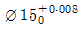
인 구멍과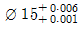
인 축을 끼워 맞출 때는 어떤 끼워 맞춤이 되는가?- 헐거운 끼워 맞춤
- 중간 끼워 맞춤
- 억지 끼워 맞춤
- 축 기준 끼워 맞춤
(정답률: 59%)
21. 대상물의 좌표면이 투상면에 평행인 직각 투상법은 어느 것인가?
- 정투사법
- 사투상법
- 등각투상법
- 부등각투상법
(정답률: 77%)
22. 리드가 12mm 인 3줄 나사의 피치는 몇 mm 인가?
- 3
- 4
- 5
- 6
(정답률: 93%)
23. 다음 중 치수 기입의 기본 원칙에 대한 설명으로 틀린 것은?(오류 신고가 접수된 문제입니다. 반드시 정답과 해설을 확인하시기 바랍니다.)
- 치수는 계산할 필요가 없도록 기입해야 한다.
- 치수는 될 수 있는 한 주투상도에 기입해야 한다.
- 구멍의 치수 기입에서 관통 구멍이 원형으로 표시된 투상도에는 그 깊이를 기입한다.
- 도면에 길이의 크기와 자세 및 위치를 명확하게 표시해야 한다.
(정답률: 66%)
24. 투상도 중에서 화살표 방향에서 본 투상도가 정면 도이면 평면도로 적합한 것은?
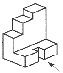
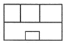
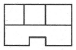
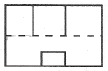
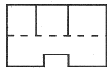
(정답률: 82%)
25. 제도에 사용되는 문자의 크기는 무엇으로 나타내는가?
- 문자의 굵기
- 문자의 넓이
- 문자의 높이
- 문자의 장평
(정답률: 87%)
26. 다음 도면의 크기가 a=594, b=841 일 때 그림에 대한 설명으로 옳은 것은?
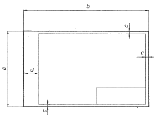
- 도면 크기의 호칭은 A0 이다.
- C의 최소 크기는 10mm 이다.
- 도면을 철할 때 d의 최소 크기는 25mm 이다.
- 중심 마크와 윤곽선이 그러져 있다.
(정답률: 70%)
27. 대상물의 일부를 파단한 경계 또는 일부를 떼어낸 경계를 표시할 때의 선의 종류는?(오류 신고가 접수된 문제입니다. 반드시 정답과 해설을 확인하시기 바랍니다.)
- 가는 실선
- 굵은 실선
- 가는 파선
- 굵은 1점 쇄선
(정답률: 63%)
28. 열풍로의 축열실 내화벽돌의 조건으로 옳은 것은?
- 비열이 낮아야 한다.
- 열전도율이 좋아야 한다.
- 가공율이 30% 이상이어야 한다.
- 비중이 1.0 이하이어야 한다.
(정답률: 69%)
29. 고로가스 청정설비로 노정가스의 유속을 낮추고 방향을 바꾸어 조립연진을 분리, 제거하는 설비명은?
- 백필터(Bag filter)
- 제진기(Dust Catcher)
- 전기집진기(Electric Precipitator)
- 벤츄리스크러버(Venturi Scrubber)
(정답률: 72%)
30. 다음 반응 중 직접 환원 반응은?
- Fe3O4 + CO ⇄ 3FeO + CO2
- FeO + CO ⇄ Fe + CO2
- 3Fe2O3 + CO ⇄ 2Fe3O4 +CO2
- FeO + C ⇄ Fe + CO
(정답률: 69%)
3과목: 제선법
31. 고로내 열수지 계산시 출열에 해당하는 것은?
- 열풍 현열
- 용선 현열
- 슬래그 생성열
- 코크스 발열량
(정답률: 60%)
32. 다음 중 고정탄소(%)를 구하는 식으로 옳은 것은?
- 고정탄소(%)=100%-[수분(%)+회분(%)+휘발분%)]
- 고정탄소(%)=100%+[수분(%)x회분(%)x휘발분(%)]
- 고정탄소(%)=100%-[수분(%)+회분(%)x휘발분(%)]
- 고정탄소(%)=100%+[수분(%)x회분(%)-휘발분(%)]
(정답률: 74%)
33. 고로를 4개의 층으로 나눌 때 상승 가스에 의해 장입물이 가열되어 부착 수분을 잃고 건조되는 층은?
- 예열층
- 환원층
- 가탄층
- 용해층
(정답률: 75%)
34. 고로내에서의 코크스 역할이 아닌 것은?
- 열원
- 환원제
- 통기성
- 탈황
(정답률: 75%)
35. 선철 중에 Si를 높이기 위한 조치 방법이 아닌 것은?
- SiO2의 투입량을 늘린다.
- 염기도를 낮게 한다.
- 로상의 온도를 높게 한다.
- 일정량의 코크스량에 대하여 광석장입량을 많게 한다.
(정답률: 38%)
36. 고로의 풍구로부터 들어오는 압풍에 의하여 생기는 풍구앞의 공간을 무엇이라고 하는가?
- 행잉(hanging)
- 레이스 웨이(race way)
- 풀루딩(flooding)
- 슬로핑(slopping)
(정답률: 78%)
37. 다음 중 고로 원료로 가장 많이 사용되는 적철광을 나타내는 화학식은?
- Fe3O4
- Fe2O3
- Fe3O4ㆍH2O
- 2Fe2Oㆍ3H2O
(정답률: 78%)
38. 고로의 생산물인 선철을 파면에 의해 분류할 때 이에 해당되지 않는 것은?
- 백선철
- 은선철
- 반선철
- 회선철
(정답률: 69%)
39. 고로에서 용선을 빼내는 곳은?
- 밸리부
- 열풍구
- 출선구
- 장입 기준선
(정답률: 84%)
40. 고로 조업에서 출선 할 때 사용되는 스키머의 역할은?
- 용선과 슬래그를 분리하는 역할
- 용선을 레이들로 보내는 역할
- 슬래그를 레이들에 보내는 역할
- 슬래그를 슬래그피트(slagpit)로 보내는 역할
(정답률: 80%)
41. 품위 57%의 광석에서 철분 93%의 선철 1톤을 만드는데 필요한 광석의 양은 몇 kg 인가? (단, 철분이 모두 환원되어 철의 손실은 없다.)(오류 신고가 접수된 문제입니다. 반드시 정답과 해설을 확인하시기 바랍니다.)
- 1400kg
- 1525kg
- 1632kg
- 2276kg
(정답률: 63%)
42. 정상적인 조업일 때 노정가스 성분 중 가장 적게 함유되어 있는 것은?
- H2
- N2
- CO
- CO2
(정답률: 66%)
43. 선철 중의 P 을 적게 하기 위한 사항으로 옳은 것은?
- 노상온도를 낮춘다.
- 염기도를 낮게 한다.
- 속도 늦은 조업을 실시한다.
- 장입물 중 P 함유량이 많은 것을 선정한다.
(정답률: 55%)
44. 다음 중 고로의 장입물에 해당되지 않는 것은?
- 철광석
- 코크스
- 석회석
- 보크사이트
(정답률: 79%)
45. 가연성 물질을 공기 중에서 연소시킬 때 공기 중의 산소농도를 감소시키면 나타나는 현상 중 옳은 것은?
- 연소가 어려워진다.
- 폭발범위는 넓어진다.
- 화염온도는 높아진다.
- 점화에너지는 감소한다.
(정답률: 73%)
4과목: 소결법
46. 생펠렛(pellet)을 조립하기 위한 조건으로 틀린 것은?
- 분입자 간에 수분이 없어야 한다.
- 원료는 충분히 미세하여야 한다.
- 원료분이 균일하게 가습되는 혼련법이어야 한다.
- 균등하게 조립될 수 있는 전동법이어야 한다.
(정답률: 66%)
47. 저광조에서 소결원료가 밸트 상에 배출되면 자동적으로 밸트 속도를 가감하여 목표량만큼 절출하는 장치는?
- Belt Feeder
- Vibrating Feeder
- Table Feeder
- Constant Feed weigher
(정답률: 75%)
48. 소결조업에 사용되는 용어 중 FFS 가 의미하는 것은?
- 고로 가스
- 코크스 가스
- 화염진행속도
- 최고도달온도
(정답률: 85%)
49. 괴상법의 종류 중 단광법에 해당되지 않는 것은?
- 크루프(krupp)법
- 다이스(dise)법
- 프레스(press)법
- 플런저(plunger)법
(정답률: 62%)
50. 소결조업 중 배합원료에 수분을 첨가하는 이유가 아닌 것은?
- 소결층 내의 온도 구배를 개선하기 위해서
- 배가스 온도를 상승시키기 위해서
- 미분원료의 응집에 의한 통기성을 향상시키기 위해서
- 소결층의 Dust 흡입 비산을 방지하기 위해서
(정답률: 66%)
51. 소결시 조재성분에 대한 설명으로 옳은 것은?
- CaO 의 증가에 따라 생산율을 증가시킨다.
- CaO 는 제품의 강도를 감소시킨다.
- Al2O3 의 결정수를 증가시킨다.
- Al2O3 증가에 따라 코크스량을 감소시킨다.
(정답률: 55%)
52. 자용성 소결광의 사용시 이점에 대한 설명이 틀린 것은?
- 소결광 중에는 페이얼라이트 함유량이 커서 피환원성이 크다.
- 코크스가 저하되고, 출선량이 증대된다.
- 로 황이 안정되어 고온 송풍이 가능하다.
- 노 내의 열량 소비를 감소시킨다.
(정답률: 53%)
53. 소결반응에서 용융결합이란 무엇인가?
- 저온에서 소결이 행해지는 경우 입자가 기화해서 입자 표면 접촉부의 확산 반응에 의해 결합이 일어난것
- 고온에서 소결한 경우 원료 중의 슬래그 성분이 기화해서 입자가 슬래그로 단단하게 결합한 것
- 고온에서 소결한 경우 원료 중의 슬래그 성분이 용융해서 입자가 슬래그 성분으로 단단하게 결합한 것
- 고온에서 소결이 행해지는 경우 입자가 용융해서 입자 표면 접촉부의 확산 반응에 의해 결합이 일어난 것
(정답률: 72%)
54. 소결광의 낙하 강도 지수(SI)를 구하는 시험방법으로 옳은 것은?
- 2m 높이에서 4회 낙하시킨 후 입도가 +10mm 인 시료 무게의 시험 전 시료 무게에 대한 백분율로 표시
- 4m 높이에서 2회 낙하시킨 후 입도가 +10mm 인 시료 무게의 시험 전 시료 무게에 대한 백분율로 표시
- 5m 높이에서 6회 낙하시킨 후 입도가 +10mm 인 시료 무게의 시험 전 시료 무게에 대한 백분율로 표시
- 6m 높이에서 5회 낙하시킨 후 입도가 +10mm 인 시료 무게의 시험 전 시료 무게에 대한 백분율로 표시
(정답률: 72%)
55. 야드에 적치된 원료를 불출대상 공장의 소요시점에 불출하는 장비는?
- 스텍커(stacker)
- 리크레이머(reclaimer)
- 언로더(unloader)
- 크러셔(crusher)
(정답률: 72%)
56. 고로 슬래그의 염기도에 큰 영향을 주는 소결광중의 염기도를 나타낸 것으로 옳은 것은?
- SiO2/Al2O3
- Al2O3/MgO
- SiO2/CaO
- CaO/SiO2
(정답률: 61%)
57. 철광석 중 결정수 제거와 CO2를 제거할 목적으로 금속 원소와 산소와의 반응이 별로 일어나지 않는 온도로 작업하는 것을 무엇이라고 하는가?
- 하소(calcination)
- 배소(roasting)
- 부유선광법(flotation)
- 비중 선광법(Gravity separation)
(정답률: 76%)
58. [보기]는 소결장입층의 통기도를 지배하는 식이다. n은 층의 가스류 흐름 상태를 나타내는 값으로 평균값이 얼마일 때 가장 좋은 통기도를 나타내는가? (단, F : 표준상태의 유량, h : 장입층의 높이, A : 흡인면적, s : 부압 이다.)
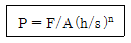
- 0.2
- 0.4
- 0.6
- 1.2
(정답률: 61%)
59. 다음 중 소결기의 급광장치에 속하지 않는 것은?
- Hopper
- Wind box
- Cut gate
- Shuttle Conveyor
(정답률: 80%)
60. 소결기 Grate Bar 위에 깔아주는 상부광의 기능이 아닌 것은?
- Grate Bar 막힘 방지
- 소결원료의 저부 배출용이
- Grate Bar 용융부착 방지
- 배광부에서 소결광 분리용이
(정답률: 60%)